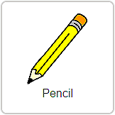
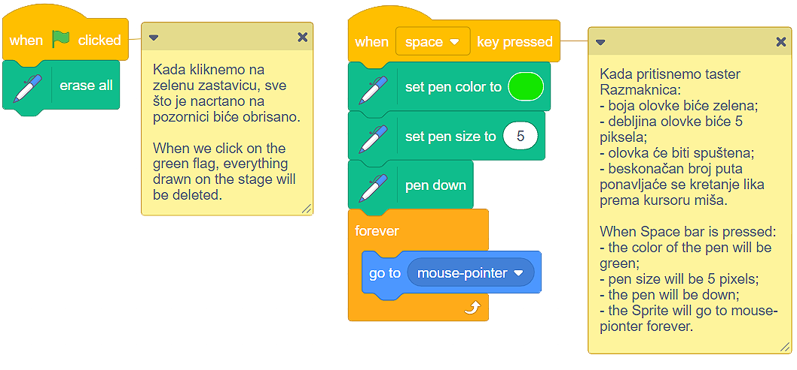
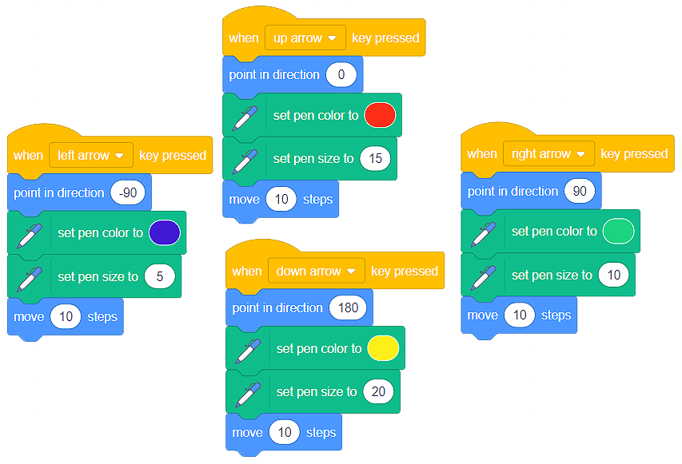

Vizatimi¶
Në Scratch, çdo sprite ka një stilolaps të fshehur dhe aftësinë për të jetuar shenja në skenë kur lëviz.
Nëse duam të vizatojmë, duhet të përdorim blloqet nga kategoria Pen. Së pari, ne duhet të shtojmë këtë kategori të blloqeve në ndërfaqen Scratch. Ne mund ta bëjmë këtë duke klikuar në butonin , i cili ndodhet në këndin e poshtëm të majtë të ekranit, dhe duke zgjedhur zgjatjen Pen.

Një kategori e re e blloqeve Pen do të shfaqet në kartën Code. Në këtë kategori, ne kemi 9 blloqe, të cilat mund t’i përdorim për vizatim në skenë. Me këto blloqe mund të fshijmë gjithçka që kemi vizatuar në skenë (erase all), e vendos stilolapsin poshtë dhe lart (pen down, pen up), kontrollojmë lehtë ngjyrën dhe madhësinë e lapsit (set pen color, change pen color, set pen size, change pen size).

Fillimisht, sprite ka stilolapsin në pozicionin lart. Për ta bërë të mundur vizatimin, duhet ta vendosim stilolapsin.
Vizatimi i lirë¶
Kur mendojmë për vizatimin e lirë, zakonisht na fotografojnë duke vizatuar me stilolaps. Kjo është arsyeja pse ne do të përdorim sprite  për të krijuar një program, i cili do të simulojë stilin e lirë të vizatimit. Ju mund ta gjeni këtë sprite në librarinë Sprite.
Në Scratch, sprites vizatojnë me qendrën e tyre. Nëse dëshirojmë të vizatojmë me “majën grafit” të lapsit, do të duhet të ndryshojmë qendrën e sprite. Ne mund ta bëjmë këtë në kartën Costums.
VIDEO - QENDRA E SPRITES
Kur shqyrtuam lëvizjen e sprite në skenë, prezantuam bllokun  . Nëse e ekzekutojmë këtë bllok në herë të pafundme (Forever), sprite vazhdimisht do të lëvizë në skenë pas kursorit të mouse. Prandaj, ne mund ta përdorim këtë bllok për të simuluar vizatimin - duke lëvizur kursorin e mouse përreth në skenë, ne do të “vizatojmë” në skenë.
. Nëse e ekzekutojmë këtë bllok në herë të pafundme (Forever), sprite vazhdimisht do të lëvizë në skenë pas kursorit të mouse. Prandaj, ne mund ta përdorim këtë bllok për të simuluar vizatimin - duke lëvizur kursorin e mouse përreth në skenë, ne do të “vizatojmë” në skenë.
Analizoni shkrimet e mëposhtme:
Krijoni një program, i cili lejon vizatimin pa pagesë dhe sigurohuni që programi të ndalojë funksionimin kur shtypni tastin s. Shikoni blloqet e duhura në kategoritë Ngjarjet dhe Kontrolli.
Kontrolli i lëvizjes së sprite duke përdorur tastierën dhe vizatimin¶
Kjo është një mundësi e shkëlqyeshme për të përdorur blloqet që lejojnë sprite të lëvizë me ndihmën e shigjetave dhe t’i azhornojmë ato më tej duke bërë linjat e tërheqjes sprite të ngjyrës dhe madhësisë së caktuar (trashësi).
Organizoni në mënyrë që sprite të tërheqë në mënyrën e mëposhtme:
ndërsa lëviz në të djathtë, duhet të vizatojë një vijë blu, dhe madhësia duhet të jetë 5 pixel;
ndërsa lëviz në të majtë, duhet të vizatojë një vijë jeshile, dhe madhësia duhet të jetë 10 pixel;
ndërsa lëviz lart, duhet të vizatojë një vijë të kuqe, dhe madhësia duhet të jetë 15 pixel;
ndërsa lëviz poshtë, duhet të vizatojë një vijë të verdhë, dhe madhësia duhet të jetë 20 pixel.
Krijoni blloqet e mëposhtme:
Ne vizatuam një imazh si më poshtë:

Mundohuni të krijoni një program, i cili do të tërheqë një imazh të ngjashëm.
Lëvizje dhe vizatimi absolut¶

Duke analizuar imazhin e mësipërm, ne mund të shohim se nuk do të jetë e vështirë të përcaktojmë pikat që duhet të lidhim për të tërhequr varkën.
 Krijoni një program, i cili do të tërheqë varkën duke përdorur linja të lehta blu 5 pixel të trashë (madhësia e stilolapsit). Mos harroni të fshini gjithçka në skenë para se të fillojë vizatimi. Gjithashtu, mos harroni ta vendosni macein të spritej si marinar në kuvertën e varkës.
Krijoni një program, i cili do të tërheqë varkën duke përdorur linja të lehta blu 5 pixel të trashë (madhësia e stilolapsit). Mos harroni të fshini gjithçka në skenë para se të fillojë vizatimi. Gjithashtu, mos harroni ta vendosni macein të spritej si marinar në kuvertën e varkës.
Zgjidhje e mundshme

{kind=link}
{kind=link}
Stampa¶
Ndonjëherë duhet të vizatojmë dhe rrotullojmë imazhe që janë më komplekse në skenë. Në vend që të vizatoni formën e dëshiruar pa pushim, mund të jetë më e lehtë të krijoni një kostum me një formë specifike, dhe pastaj të shumëzoni dhe rrotulloni atë duke përdorur bllokun Stamp  .
.
Thjesht duhet të përdorim  për të vizatuar një sprite të re, dhe pastaj të vizatoni formën që dëshirojmë në redaktorin e bojrave të vendosur në skedën Costums.
për të vizatuar një sprite të re, dhe pastaj të vizatoni formën që dëshirojmë në redaktorin e bojrave të vendosur në skedën Costums.
DRAGON VIDEO
Ne gjithashtu mund të përdorim stampën me kostumet e sprites që gjenden në librarinë e Sprite Scratch.